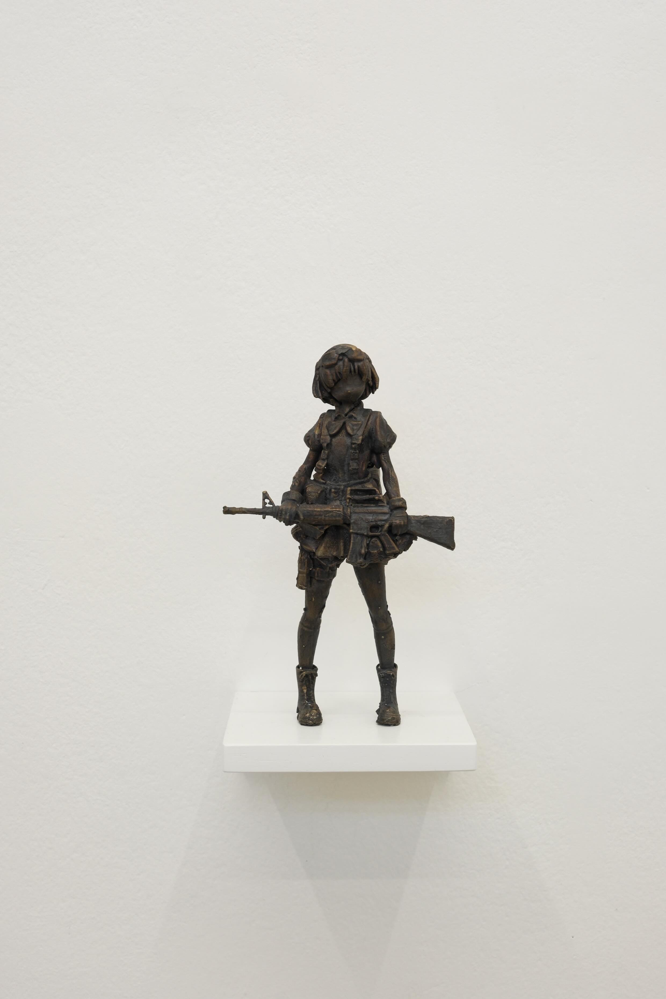
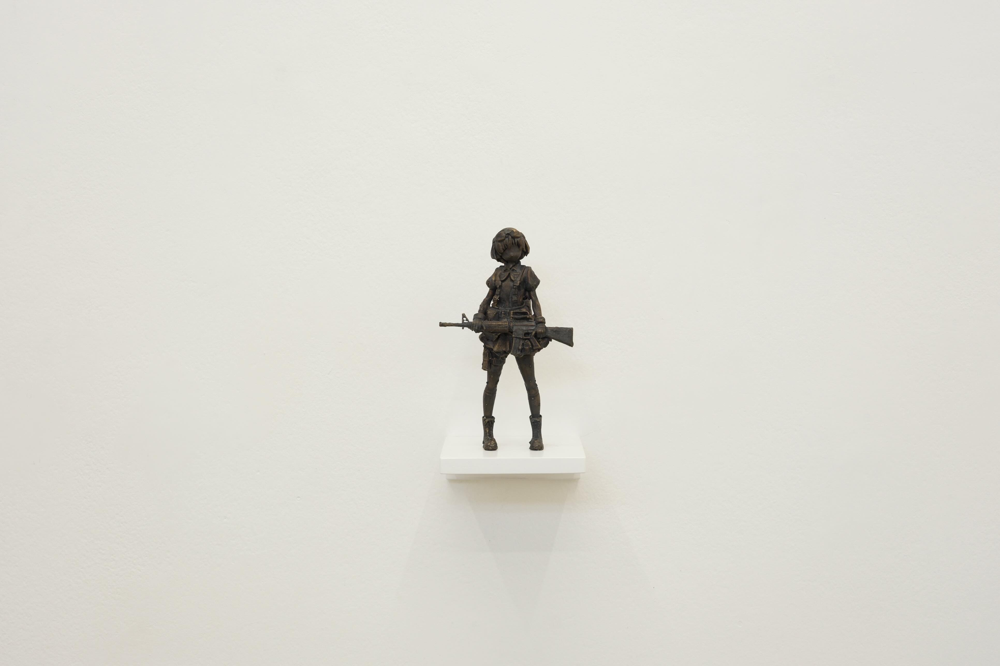
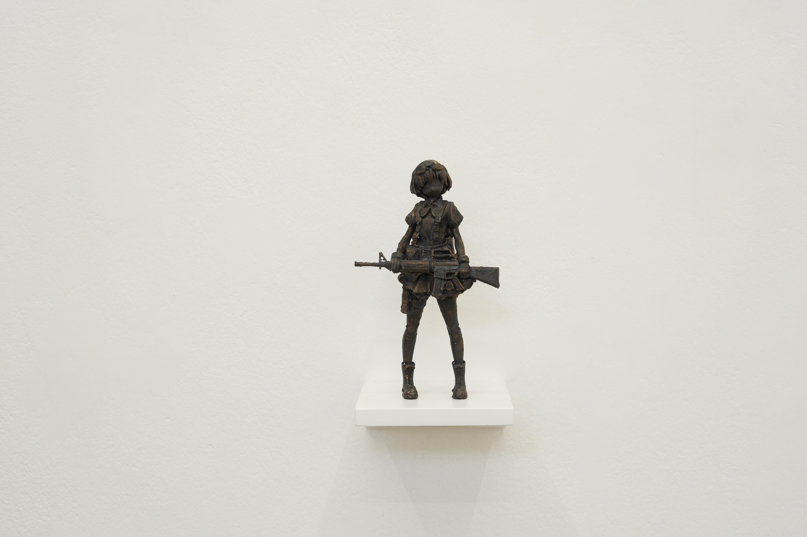
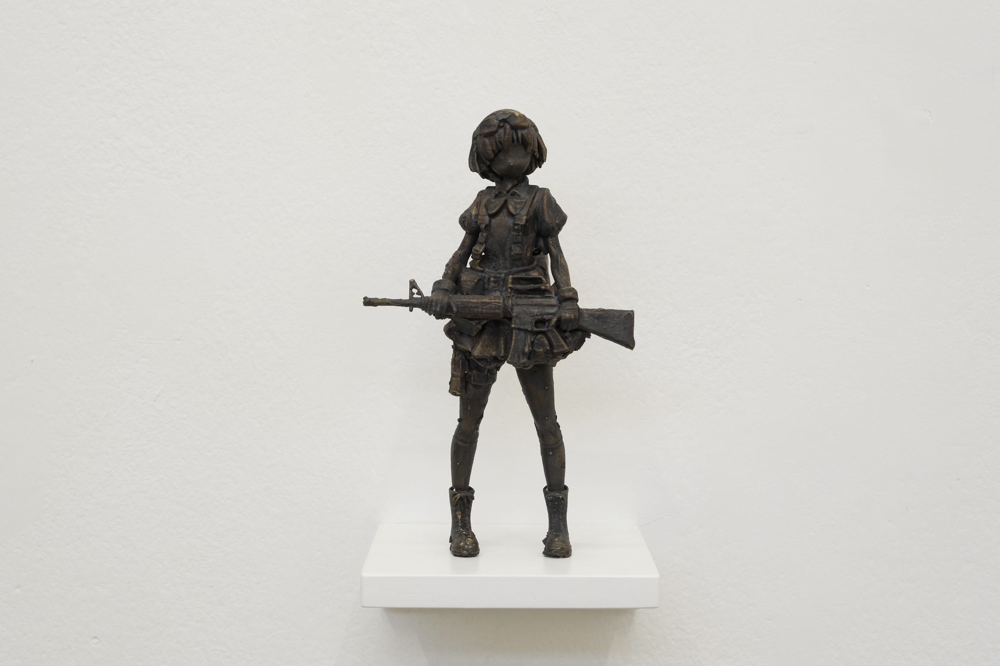

seduced,
softened,
conditioned,
trained -
this piece reimagines the contemporary war idol and
investigates cuteness as a soft power.
falling into submission, i unpick embedded algorithmic desires -
commemorating ‘her’ into permanence.